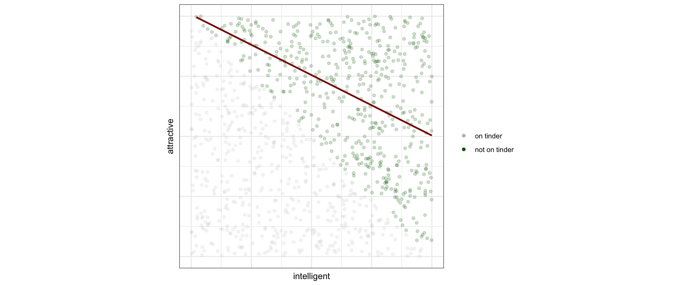

Causal Directed Acylic Graphs
introduction
2024-08-06
Example task: are hospital deliveries good for babies?

Causal Directed Acyclic Graphs
diagram that represents our assumptions on causal relations
- nodes are variables
- arrows (directed edges) point from cause to effect

- when used to convey causal assumptions, DAGs are ‘causal’ DAGs1
Basic DAG patterns: chain

- \(M\) mediates effect of \(X\) on \(Y\)
- \(X\): student signs up for causal inference course, \(M\): student studies causal inference, \(Y\): student understands causal inference
- \(X \mathrel{\not\!\perp} Y\) (i.e. \(X\) and \(Y\) are dependent)
- \(X \perp Y | M\)
- typically do not want to adjust for \(M\) when estimating total effect of \(X\) on \(Y\)
Basic DAG patterns: collider

- \(X\) and \(Y\) both cause \(Z\)
- \(X \perp Y\) (but NOT when conditioning on \(Z\))
- often do not want to condition on \(Z\) as this induces a correlation between \(X\) and \(Y\)
Collider bias - Tinder

DAGs are ‘non-parametric’
They relay what variable ‘listens’ to what, but not in what way

- this DAG says \(Y\) is a function of \(X,T\) and external noise \(U_Y\), or:
- \(Y = f_Y(X,T,U_Y)\)
- in the next lecture we’ll talk more about these ‘structural equations’
DAGs are ‘non-parametric’
They relay what variable ‘listens’ to what, but not in what way
- \(Y = T + 0.5 (X - \pi) + \epsilon\) (linear)
- \(Y = T + \sin(X) + \epsilon\) (non-linear additive)
- \(Y = T * \sin(X) - (1-T) \sin(x) + \epsilon\) (non-linear + interaction)
Mini Quiz
Google Form https://bit.ly/dagquiz

The DAG definition of an intervention
assume this is our DAG for a situation and we want to learn the effect \(T\) has on \(Y\)
- in the graph, intervening on variable \(T\) means removing all incoming arrows
- this assumes such a modular intervention is possible: i.e. leave everything else unaltered


- which means \(T\) does not listen to other variables anymore, but is set at a particular value, like in an experiment
- imagining this scenario requires a well-defined treatment variable (akin to consistency)
The gist of observational causal inference
is to take data we have to make inferences about data from a different distribution (i.e. the intervened-on distribution)
- causal inference frameworks provide a language to express assumptions
- based on these assumptions, the framework tells us whether such an inference is possible
- this is often referred to as is the effect identified
- and provide formula(s) for how to do so based on the observed data distribution (estimand(s))
- (one could say this is essentially assumption-based extrapolation, some researchers think this entire enterprise is anti-scientific)
- not yet said: how to do statistical inference to estimate the estimand (much can still go wrong here)
- can also be part of identification, see the following lecture on SCMs
d-separation when conditioning

paths with conditioning variables \(r\), \(t\)
- conditioning on variable:
- when variable is a collider: opens a path (\(t\) opens \(s,t,u\) etc.)
- otherwise: blocks a path (e.g. \(r\) blocks \(x,r,s\))
- conditioning set \(Z=\{r,t\}\): set of conditioning variables